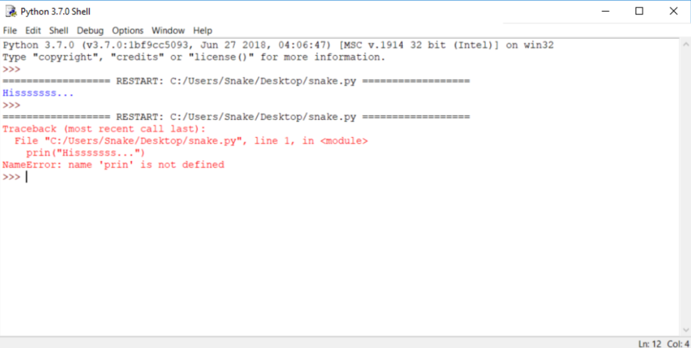

Cómo estropear y arreglar tu código
Es posible que hayas notado que el mensaje de error generado para el error anterior es bastante diferente del primero.

Esto se debe a que la naturaleza del error es diferente y el error se descubre en una etapa diferente de la interpretación.
La ventana del editor no proporcionará ninguna información útil sobre el error, pero es posible que las ventanas de la consola si.
El mensaje (en rojo) muestra (en las siguientes líneas):
- El rastreo (que es la ruta que el código atraviesa a través de diferentes partes del programa, puedes ignorarlo por ahora, ya que está vacío en un código tan simple).
- La ubicación del error (el nombre del archivo que contiene el error, el número de línea y el nombre del módulo); nota: el número puede ser engañoso, ya que Python generalmente muestra el lugar donde se percata por primera vez de los efectos del error, no necesariamente del error en sí.
- El contenido de la línea errónea; nota: la ventana del editor de IDLE no muestra números de línea, pero muestra la ubicación actual del cursor en la esquina inferior derecha; utilízalo para ubicar la línea errónea en un código fuente largo.
- El nombre del error y una breve explicación.